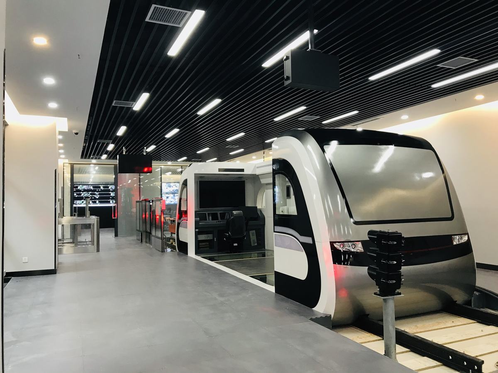
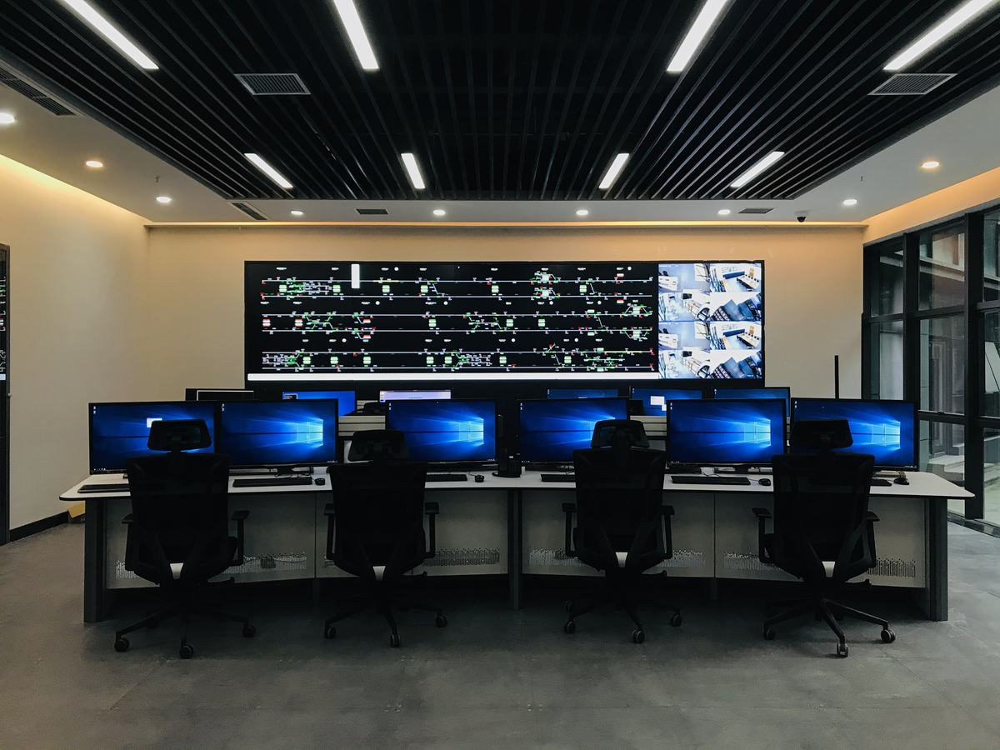
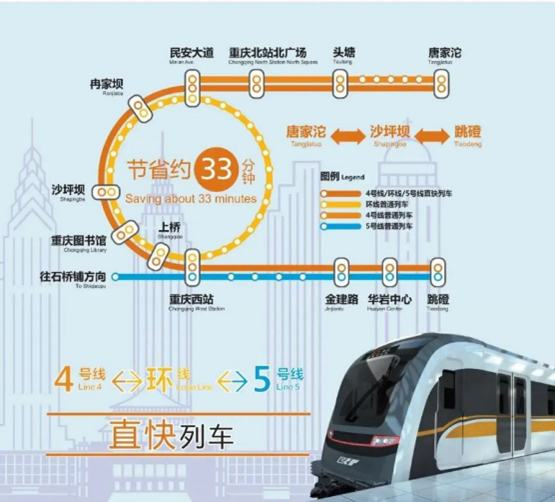

国家《“十三五”现代综合交通运输体系发展规划》提出，“应用基于无线通信的列车控制系统，促进不同线路和设备之间相互联通”。重庆作为典型的山地城市，城市界面地形复杂，坡地、峡谷众多，是典型的“多中心组团式”形态，其特殊形态使得城市轨道交通线网中换乘车站众多，日均换乘客流量达到百万人次，乘客单次换乘时间约5min，严重影响影响了轨道交通对乘客的吸引力，对城市轨道交通互联互通运行提出了明确需求。城轨互联互通是行业公认的世界性难题，之前国内外诸多城市如巴黎、纽约、北京、上海等进行了多轮尝试但均未成功，关键原因为缺乏互联互通的顶层设计，各线列车未进行车型、限界等的统型设计，列车资源无法在线间共享；由于国外厂商技术保密，保障行车安全的列车控制系统与调度指挥系统无互联互通设计，仅能在单线内发挥作用，无法实现跨线协同调度和控制。此外,既有列车车型难以适应诸如重庆山地城市“坡度大、转弯半径小”的地形特点，对实现城市轨道交通互联互通提出了更高的要求。
项目组依托国家发改委“产业转型升级（增强制造业核心竞争力）”项目，完成了面向复杂山地地形的新型As列车设计、互联互通列控系统和协同调度指挥系统设计并制造装备，打通了从自主设计到工程应用的全链条，世界上首次实现了城市轨道交通线网互联互通运营，完成了从“人换乘”到“车换线”的历史性转变，实现跨线出行模式创新变革。项目取得如下创新设计成果：（1）设计了面向山地复杂地形的新型As列车，包括5动1拖动力配置模型、小轴距无摇枕新型转向架、双受电弓受电等关键设计工作，解决了车辆兼顾最小转弯半径250m与爬坡能力50‰的技术难题，并制定了适应多线路集群运行的As车统型标准；（2）设计了面向城轨互联互通的信号系统，首次编制了涵盖需求、产品、接口、测试、验收全生命周期的城轨互联互通信号系列标准，完成了不同运营环境（高架、跨江桥梁、深埋隧道等）和最不利失效模式下的列车安全制动防护，以及列车跨线运行安全保障等创新设计技术方案，搭建了中国标准的CBTC互联互通产业链，提升了我国高端装备设计制造领域的自主创新能力；（3）设计了互联互通跨线列车运行图追踪协同方法，研制了匹配互联互通高效灵活运行的智能调度指挥系统，解决了城轨线网内跨线运行的协同调度指挥难题，实现了重庆“4-环-5”跨线出行模式创新，乘客最长在途时间从92min缩短至59min，可为乘客节约出行时间33min，出行效率提升36%。
施仲衡、谭建荣、丁荣军等院士评价本项目“技术国际先进水平”，发改委评价本项目“整体技术处于国际领先水平，具有广泛的推广应用价值”。本项目累积获发明专利32项，其他知识产权59项(软著5项，论文13篇、国/地/团准41项)， 推动自主化信号设备市场占有率从13%增至80%，推广应用于北京、越南河内等国内外100余条城轨线路。近3年累积直接经济效益102亿元，其中重庆互联互通线路实现票务收入18亿元，系统推广应用经济效益84亿元。项目荣获交通部重大科技创新成果奖、行业科技进步特等奖、重庆创新争先奖及国际工程行业“诺贝尔奖”—菲迪克全球年度杰出项目奖。
创新设计思路：城市轨道交通一般采用单线建设、单线运营的模式，在线路成网后仍需通过乘客的走行来实现换乘。但随着城轨线网规模的扩大，乘客花费在换乘中的时间越来越多，严重影响了城轨对乘客的吸引力。为了解决这一问题，项目团队设想通过列车、控制系统、调度指挥系统的互联互通设计，实现“人换乘”到“车换线”，实现跨线出行模式变革。
总体设计：针对山地城市“坡度大、转弯半径小”的地形特点，设计强爬坡易转弯的新型As列车，包括5动1拖动力配置模型、小轴距无摇枕新型转向架、双受电弓受电等关键部件的设计；针对互联互通的跨线协同控制安全难题，提出不同运营环境（高架、跨江桥梁、深埋隧道等）和最不利失效模式下的列车安全制动防护、列车跨线运行安全保障等设计方案；针对互联互通的跨线协同调度指挥难题，设计互联互通跨线列车运行图追踪协同方法和列车跨线网下的节能运行方法，研制了匹配互联互通高效灵活运行的智能调度指挥系统。从而打通了从自主设计到工程应用的全链条，实现“人换乘”到“车换线”跨线出行模式变革。
该项目详细设计创新如下：
创新点（一）:面向山地复杂地形的“强爬坡易转弯”As列车设计
针对既有车型无法满足线路竖曲线大、转弯半径小、深埋车站等重庆山地地形特征的问题，设计并研制了强爬坡易转弯的新型As列车成套装备，完成了5动1拖动力配置模型、小轴距无摇枕新型转向架、双受电弓受电等关键设计模块，突破了牵引动力性能增强及轴重控制技术和小轴距无摇枕新型转向架技术，列车爬坡能力提升至50‰，提升了43%；设计的2200mm轴距无摇枕转向架大幅提高了列车曲线通过能力，车辆通过正线最小曲线半径由300m（A型车）提升至250m，且相较轴距2300mm的转向架磨耗功减少约5%。制定了适应多线路集群运行的As车统型标准，实现了轨道交通多线路集群运行下零部件级别的装备共享、车辆共享、跨线运营、救援及连挂，重庆二轮线路车辆购置成本减少1.94亿元。
（1）车体轻量化及结构强化设计
为适应山地城市环境， As列车设计车体宽度3000mm（与现有A型地铁车辆保持一致），车体基本长度19300（介于A、B型地铁车辆之间），以满足小定距、小轴距曲线通过能力需求。
图1 As列车车体断面设计图
车体结构采用6系铝合金挤压型材，型材采用矩形框结构设计，在满足车体强度的同时对车体型材尺寸进行优化，车体前端采用铝合金蒙皮+铝合金骨架的方式实现车体的轻量化设计。在满足各系统强度的前提下，As车辆轴重降低到15t较标准A型车（16到17t）减重5%。
图2 As列车车体结构
（2）5动1拖动力设计
针对重庆山地城市的线路特点，通过5动1拖动力设计突破牵引性能，将车辆的动力配置由4M2T提升为5M1T，满足6辆编组列车在超员（AW3）状态下，损失1/5动力或者1/2动力时，仍然可以在50‰的上坡道上起动，并行驶到最近车站，清客后返回车辆基地。一列6辆编组处于空载（AW0）状态的列车与另一列完全丧失动力的处于超员载荷（AW3）列车连挂后，仍能在50‰的坡道上由静止状态下起动，并使列车运行线路中最困难的4个站间。
图3 动力配置设计图
图 4 损失1/5动力坡道仿真
（3）无摇枕焊接结构转向架设计
As型地铁转向架通过无摇枕焊接结构转向架设计，设有一系悬挂的圆钢弹簧组+橡胶弹簧，采用转臂式定位。相较于A型地铁转向架，As型地铁转向架轴距由2500mm缩小至2200mm，降低轮缘与轨道侧面的接触压力，减少轮缘磨耗，满足正线最小曲线半径250m运行需求。
图 5 As列车无摇枕新型转向架设计
（4）双受电弓受电设计
采用“双受电弓受电”设计，通过单元内双弓并网供电技术，全列车设置4架受电弓，每个单元两架受电弓，互为冗余，解决了车辆在刚性接触网供电条件下大坡道运行牵引和再生制动受流难题, 有效降低滑板磨耗，受电弓滑块磨耗平均寿命超过75万公里，是普通单弓受流地铁车辆寿命的10倍。
图 6 双受电弓设计
【技术创新支撑：支撑以上创新设计的关键技术有：无摇枕空气弹簧转向架技术、双受电弓受电技术等，详细参见ZL 2021 1 0431120.7，ZL 2021 1 0432664.5等发明专利，重庆市标准（《山地城市A型地铁车辆通用技术标准》DBJ50/T-259-2017、《As型地铁车辆日常维修技术规范》CQJTY/T N04-2021）等】。
创新点（二）: 面向城轨互联互通的高安全、高可靠信号系统设计
针对信号系统的跨线协同控制安全难题，完成了信号系统互联互通的安全设计模型、不同运营环境（高架、跨江桥梁、深埋隧道等）和最不利失效模式下的列车安全制动防护、列车跨线运行安全保障等设计；针对传统车地无线通信技术易受干扰、组网复杂、移动性差的问题，首次提出基于LTE的城市轨道交通车地综合通信系统（LTE-M），设计了基于虚拟资源分配的无线通信跨层切换模型，保障车地无线通信的高可靠性；完成了支撑互联互通系统准入的交叉测试和交叉认证平台的设计与搭建，解决了测试验证需要覆盖所有系统和场景的难题。编制了涵盖需求、产品、接口、测试、验收全生命周期的城轨互联互通信号系统标准，搭建了中国标准的CBTC互联互通产业链，提升了我国高端装备设计制造领域的自主创新能力。
（1）互联互通的信号系统安全设计
提出了异构CBTC信号系统下的系统安全功能保障方法，基于可容忍危险概率（THR）建立了异构CBTC系统下的系统安全设计模型，采用FEMA故障模式分析方法构建互联互通安全防护边界，解决了在线路集群不同运营环境和最不利失效模式下的列车安全制动防护、列车线网内跨线运行安全保障、高离散车辆控制参数与多线路复杂条件协同控制等难题，研发了自主化互联互通CBTC成套列车控制系统装备。编制了涵盖需求、产品、接口、测试、验收全生命周期的城轨互联互通信号系统系列标准，
图 7 信号系统互联互通系统安全设计模型
图 8 列车安全制动模型
表1 轨道交通信号系统互联互通安全边界
（2）基于LTE的城市轨道交通车地综合通信系统设计
创新地提出基于LTE的城市轨道交通车地综合通信系统（LTE-M），设计了基于虚拟资源分配的无线通信跨层切换模型，提出保证不同QoS的跨越应用层到物理层的切换方案，解决了传统WLAN和TETRA技术易受干扰、组网复杂、移动性差的问题，实现了跨线路切换时延从大于20s到小于2s的突破。
图 9 跨核心网互通网络模型
图 10 LTE核心网通信架构
（3）支撑互联互通系统准入的交叉测试和交叉认证平台的设计
针对互联互通列车运行环境复杂多变，安全测试和安全认证涉及各种动态场景、需覆盖所有系统的兼容性和协同性难题，设计并搭建了城轨多线路下基于结果互信的互联互通交叉测试和交叉认证平台，首创线路集群不同厂家的多方安全认证，并完成示范应用。
图 11 交叉测试平台架构设计
设计了基于PXI（面向仪器系统的PCI扩展）技术的通用车载适配方案，针对不同信号系统厂家车载设备采用的线缆接口形式、驾驶台IO量驱采逻辑、模拟量输出方式、应答器接口实现方式以及速传测速接口形式等存在较大差异的情况，适配不同厂家车载设备，保障了不同设备厂家车载设备进行不同地面线路的共线、跨线交叉行车调试与测试。
图 12 车载设备适配系统架构设计
【技术创新支撑：支撑以上创新设计的关键技术有：跨线重叠区的进路解锁、列车跨线进路搜索、互联互通 CBTC系统的公有电子地图设计等关键技术，详细参见ZL202010994649.5、ZL201611180074.3等发明专利，国家标准1项（《城市轨道交通信号系统通用技术条件》GB12758-2023），中国城市轨道交通协会团体标准36项（《城市轨道交通基于通信的列车运行控制系统（CBTC）互联互通系统规范第1部分：系统总体要求》T/CAMET 040010.1-2018）等，重庆市标准（《重庆轨道交通列车控制系统（CQTCS）标准》DBJ50/T-432-2022），论文《面向互联互通 CBTC系统的公有电子地图设计方法》等】
创新点（三）: 面向互联互通的协同调度指挥设计
针对互联互通线路集群下调度指挥算法不一致，调度指令滞后或错误易导致列车运行拥堵、乘客滞留、列车能耗大的运营组织重大难题，设计了互联互通跨线列车运行图追踪协同设计方法、基于时变客流需求的非线性列车运行调整模型、面向线网列车跨线运行下的列车节能优化方法，应用互联互通运营条件下以客流需求为导向的列车全局实时调度技术，研发了国内首套城市轨道交通线路集群智能调度系统，实现了从“人换乘”到“车换线”的历史性转变，换乘客流中40%选择一车直达，乘客出行最长在途时间从92分钟缩短至59分钟，出行效率提升36%。
（1）互联互通跨线列车运行图追踪协同设计方法
创新了互联互通跨线运行的运行图设计方法，探明了行车间隔、跨线车运行计划、上线列车数量、线路线型及联络线设置对线路集群互联互通跨线运行效率的影响规律，开发了与客流分布规律相匹配的交路集合技术、普通列车到达避让与追踪间隔匹配技术，实现了从“人换乘”到“车换线”的历史性转变。
设计维持本线车起点站发车行车间隔不变，跨线车插入原有本线车方案中运行的互联互通列车运行图编制方法。跨线车插入本线车中运行，可最大程度减少跨线运行对现开行方案运输能力、行车间隔、发车时刻等的影响。跨线车插入运行，须满足线路折返能力、通过能力及避让站越行等基本条件，单线普通车极限行车间隔与线路最小追踪间隔之差，即可压缩时间。使原有开行方案的运输能力不受影响，跨线交路覆盖的车站运输能力有所提升。
（2）匹配互联互通高效灵活运行的智能调度指挥系统
研制了国内首套智能调度系统，解决了线网内跨线运营的协同调度指挥难题，实现了“4-环-5”跨线出行模式创新，换乘客流中40%选择一车直达，乘客出行最长在途时间从92分钟缩短至59分钟，出行效率提升36%。
图 13 智能调度系统架构
（3）列车跨线网下的节能运行设计
设计了面向线网列车跨线运行下的列车节能优化方法，建立本线列车与跨线列车在不同牵引、惰性、制动过程下的驾驶策略节能优化模型，研究本线列车和跨线列车的运行时间与运行能耗之间的关系，提高了再生制动能量的利用率，实现了降低线网电能10%。
【技术创新支撑：支撑以上创新设计的关键技术有：网络化行车组织、跨线运行图调整、跨线运行下的节能优化等关键技术，详细参见ZL202110737713.6、ZL202110859556.6等发明专利，重庆市标准（互联互通线网行车调度系统技术标准DBJ50T-494-2024 ），论文《城市轨道交通互联互通网络化行车组织方案初探》等】



面向山地地形的新型列车与互联互通信号系统,解决山地城轨换乘痛点
山地列车造型与站城界面设计
日均百万人次换乘提速,直接改善市民通勤
山地城轨装备与信号系统的可复制市场
山地城市智慧交通的行业样本